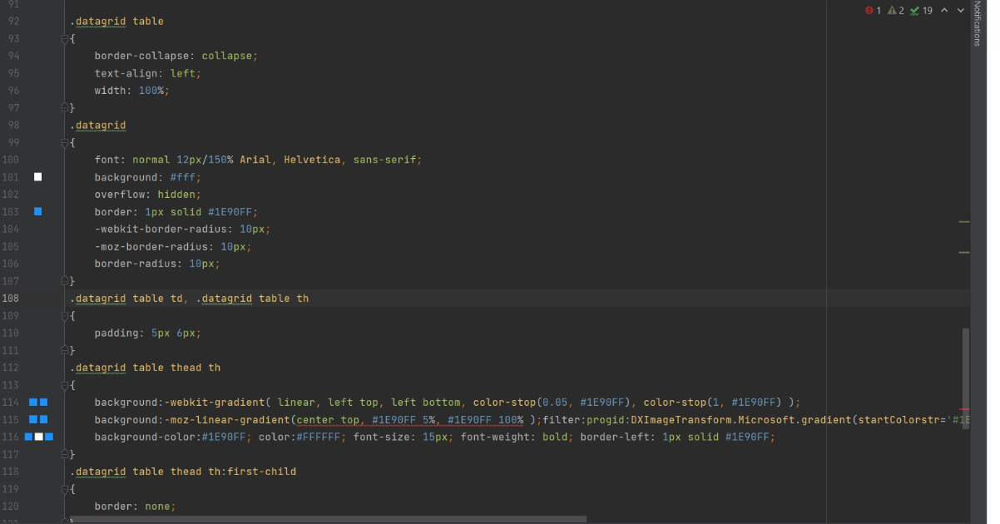
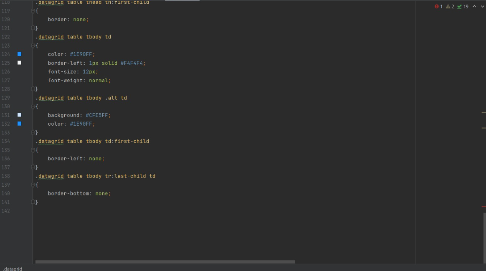
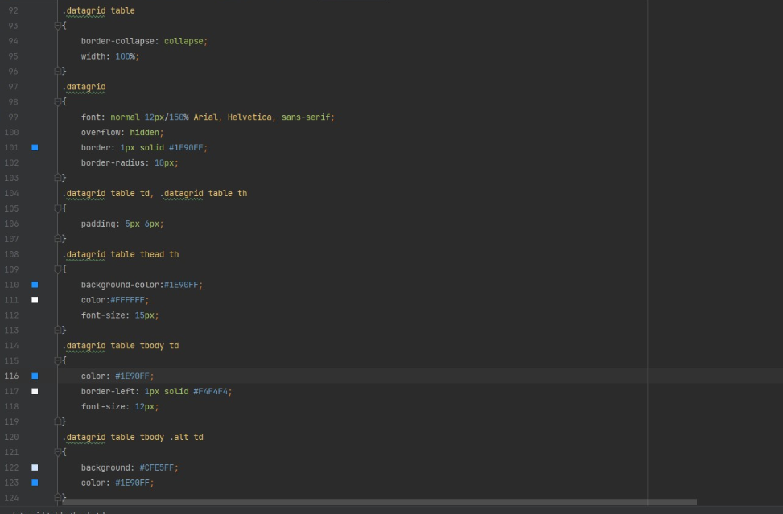

De tabel die ik aangemaakt heb staat hier onderaan de site: Personal homepage
Hier zien we dat niet alle css die automatisch gegenereerd werd echt nodig was
Hieronder zie je dat ik de gebruikte css code heb kunnen halveren om nogsteeds hetzelfde resultaat te behouden.
In de automatisch gegenereerde tabel stonden inderdaad een aantal browser prefixen, maar voor mijn browser: Google Chrome, mag je de prefix weg halen omdat deze browser een transitie heeft gemaakt waardoor je deze niet meer nodig hebt.